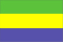

{kind=link}


![[Country map of Gabon]](../maps/gb-map.jpg)
| Gabon |  |
|
| | |
| Introduction |
Background: Ruled by autocratic presidents since independence from France in 1960, Gabon introduced a multiparty system and a new constitution in the early 1990s that allowed for a more transparent electoral process and for reforms of governmental institutions. A small population, abundant natural resources, and foreign private investment have helped make Gabon one of the more prosperous black African countries.
| Geography |
Location: Western Africa, bordering the Atlantic Ocean at the Equator, between Republic of the Congo and Equatorial Guinea
Geographic coordinates: 1 00 S, 11 45 E
Map references: Africa
Area:
total:
267,667 sq km
land:
257,667 sq km
water:
10,000 sq km
Area - comparative: slightly smaller than Colorado
Land boundaries:
total:
2,551 km
border countries:
Cameroon 298 km, Republic of the Congo 1,903 km, Equatorial Guinea 350 km
Coastline: 885 km
Maritime claims:
contiguous zone:
24 nm
exclusive economic zone:
200 nm
territorial sea:
12 nm
Climate: tropical; always hot, humid
Terrain: narrow coastal plain; hilly interior; savanna in east and south
Elevation extremes:
lowest point:
Atlantic Ocean 0 m
highest point:
Mont Iboundji 1,575 m
Natural resources: petroleum, manganese, uranium, gold, timber, iron ore, hydropower
Land use:
arable land:
1%
permanent crops:
1%
permanent pastures:
18%
forests and woodland:
77%
other:
3% (1993 est.)
Irrigated land: 40 sq km (1993 est.)
Natural hazards: NA
Environment - current issues: deforestation; poaching
Environment - international agreements:
party to:
Biodiversity, Climate Change, Desertification, Endangered Species, Law of the Sea, Marine Dumping, Nuclear Test Ban, Ozone Layer Protection, Ship Pollution, Tropical Timber 83, Tropical Timber 94, Wetlands
signed, but not ratified:
none of the selected agreements
| People |
Population:
1,208,436
note:
estimates for this country explicitly take into account the effects of excess mortality due to AIDS; this can result in lower life expectancy, higher infant mortality and death rates, lower population and growth rates, and changes in the distribution of population by age and sex than would otherwise be expected (July 2000 est.)
Age structure:
0-14 years:
33% (male 201,737; female 200,764)
15-64 years:
61% (male 371,359; female 364,982)
65 years and over:
6% (male 34,478; female 35,116) (2000 est.)
Population growth rate: 1.08% (2000 est.)
Birth rate: 27.6 births/1,000 population (2000 est.)
Death rate: 16.83 deaths/1,000 population (2000 est.)
Net migration rate: 0 migrant(s)/1,000 population (2000 est.)
Sex ratio:
at birth:
1.03 male(s)/female
under 15 years:
1 male(s)/female
15-64 years:
1.02 male(s)/female
65 years and over:
0.98 male(s)/female
total population:
1.01 male(s)/female (2000 est.)
Infant mortality rate: 96.3 deaths/1,000 live births (2000 est.)
Life expectancy at birth:
total population:
50.08 years
male:
48.94 years
female:
51.26 years (2000 est.)
Total fertility rate: 3.73 children born/woman (2000 est.)
Nationality:
noun:
Gabonese (singular and plural)
adjective:
Gabonese
Ethnic groups: Bantu tribes including four major tribal groupings (Fang, Eshira, Bapounou, Bateke), other Africans and Europeans 154,000, including 6,000 French and 11,000 persons of dual nationality
Religions: Christian 55%-75%, Muslim less than 1%, animist
Languages: French (official), Fang, Myene, Bateke, Bapounou/Eschira, Bandjabi
Literacy:
definition:
age 15 and over can read and write
total population:
63.2%
male:
73.7%
female:
53.3% (1995 est.)
| Government |
Country name:
conventional long form:
Gabonese Republic
conventional short form:
Gabon
local long form:
Republique Gabonaise
local short form:
Gabon
Data code: GB
Government type: republic; multiparty presidential regime (opposition parties legalized in 1990)
Capital: Libreville
Administrative divisions: 9 provinces; Estuaire, Haut-Ogooue, Moyen-Ogooue, Ngounie, Nyanga, Ogooue-Ivindo, Ogooue-Lolo, Ogooue-Maritime, Woleu-Ntem
Independence: 17 August 1960 (from France)
National holiday: Independence Day, 17 August (1960) (Gabon granted full independence from France)
Constitution: adopted 14 March 1991
Legal system: based on French civil law system and customary law; judicial review of legislative acts in Constitutional Chamber of the Supreme Court; compulsory ICJ jurisdiction not accepted
Suffrage: 21 years of age; universal
Executive branch:
chief of state:
President El Hadj Omar BONGO (since 2 December 1967)
head of government:
Prime Minister Jean-Francois NTOUTOUME-EMANE (since 23 January 1999)
cabinet:
Council of Ministers appointed by the prime minister in consultation with the president
elections:
president elected by popular vote for a seven-year term; election last held 6 December 1998 (next to be held NA 2005); prime minister appointed by the president
election results:
President El Hadj Omar BONGO reelected; percent of vote - El Hadj Omar BONGO 66.6%, Pierre MAMBOUNDOU 16.5%, Fr. Paul M'BA-ABESSOLE 13.4%
Legislative branch:
bicameral legislature consists of the Senate (91 seats) and the National Assembly or Assemblee Nationale (120 seats); members are elected by direct popular vote to serve five-year terms
elections:
National Assembly - last held 15 and 29 December 1996 (next to be held NA December 2001); Senate - last held 26 January and 9 February 1997 (next to be held in January 2002)
election results:
National Assembly - percent of vote by party - NA; seats by party - PDG 89, PGP 9, RNB 6, CLR 3, UPG 2, USG 2, independents 4, others 5; Senate - percent of vote by party - NA; seats by party - PDG 53, RNB 20, PGP 4, ADERE 3, RDP 1, CLR 1, independents 9
Judicial branch: Supreme Court or Cour Supreme consisting of three chambers - Judicial, Administrative, and Accounts; Constitutional Court; Courts of Appeal; Court of State Security; County Courts
Political parties and leaders: African Forum for Reconstruction or FAR [leader NA]; Circle of Liberal Reformers or CLR [General Jean Boniface ASSELE]; Democratic and Republican Alliance or ADERE [Divungui-di-Ndinge DIDJOB]; Gabonese Democratic Party or PDG, former sole party [Simplice Nguedet MANZELA, secretary general]; Gabonese Party for Progress or PGP [Pierre-Louis AGONDJO-OKAWE, president]; Gabonese People's Union or UPG [Pierre MAMBOUNDOU]; Gabonese Socialist Union or USG [leader NA]; National Rally of Woodcutters (Bucherons) or RNB [Fr. Paul M'BA-ABESSOLE]; People's Unity Party or PUP [Louis Gaston MAYILA]; Rally for Democracy and Progress or RDP [leader NA]; Social Democratic Party or PSD [Pierre Claver MAGANGA-MOUSSAVOU]
International organization participation: ACCT, ACP, AfDB, BDEAC, CCC, CEEAC, ECA, FAO, FZ, G-24, G-77, IAEA, IBRD, ICAO, ICFTU, IDA, IDB, IFAD, IFC, IFRCS (associate), ILO, IMF, IMO, Inmarsat, Intelsat, Interpol, IOC, ITU, NAM, OAU, OIC, OPCW, UDEAC, UN, UNCTAD, UNESCO, UNIDO, UPU, WCL, WHO, WIPO, WMO, WToO, WTrO
Diplomatic representation in the US:
chief of mission:
Ambassador Paul BOUNDOUKOU-LATHA
chancery:
Suite 200, 2034 20th Street NW, Washington, DC 20009
telephone:
[1] (202) 797-1000
FAX:
[1] (202) 332-0668
consulate(s):
New York
Diplomatic representation from the US:
chief of mission:
Ambassador James V. LEDESMA
embassy:
Boulevard de la Mer, Libreville
mailing address:
B. P. 4000, Libreville
telephone:
[241] 76 20 03 through 76 20 04, 74 34 92
FAX:
[241] 74 55 07
Flag description: three equal horizontal bands of green (top), yellow, and blue
| Economy |
Economy - overview: Gabon enjoys a per capita income four times that of most nations of sub-Saharan Africa. This has supported a sharp decline in extreme poverty; yet because of high income inequality a large proportion of the population remains poor. Gabon depended on timber and manganese until oil was discovered offshore in the early 1970s. The oil sector now accounts for 50% of GDP. Gabon continues to face fluctuating prices for its oil, timber, manganese, and uranium exports. Despite the abundance of natural wealth, the economy is hobbled by poor fiscal management. In 1992, the fiscal deficit widened to 2.4% of GDP, and Gabon failed to settle arrears on its bilateral debt, leading to a cancellation of rescheduling agreements with official and private creditors. Devaluation of its Francophone currency by 50% on 12 January 1994 sparked a one-time inflationary surge, to 35%; the rate dropped to 6% in 1996. The IMF provided a one-year standby arrangement in 1994-95 and a three-year Enhanced Financing Facility (EFF) at near commercial rates beginning in late 1995. Those agreements mandate progress in privatization and fiscal discipline. France provided additional financial support in January 1997 after Gabon had met IMF targets for mid-1996. In 1997, an IMF mission to Gabon criticized the government for overspending on off-budget items, overborrowing from the central bank, and slipping on its schedule for privatization and administrative reform. The rebound of oil prices in 1999 helped growth, but drops in production hampered Gabon from fully realizing potential gains. With support from higher oil prices, growth will move up in 2000-01.
GDP: purchasing power parity - $7.9 billion (1999 est.)
GDP - real growth rate: 1.7% (1999 est.)
GDP - per capita: purchasing power parity - $6,500 (1999 est.)
GDP - composition by sector:
agriculture:
10%
industry:
60%
services:
30% (1999 est.)
Population below poverty line: NA%
Household income or consumption by percentage share:
lowest 10%:
NA%
highest 10%:
NA%
Inflation rate (consumer prices): 2.9% (1999 est.)
Labor force: 600,000
Labor force - by occupation: agriculture 60%, services and government 25%, industry and commerce 15%
Unemployment rate: 21% (1997 est.)
Budget:
revenues:
$1.5 billion
expenditures:
$1.3 billion, including capital expenditures of $302 million (1996 est.)
Industries: food and beverage; textile; lumbering and plywood; cement; petroleum extraction and refining; manganese, uranium, and gold mining; chemicals; ship repair
Industrial production growth rate: 2.3% (1995)
Electricity - production: 1.025 billion kWh (1998)
Electricity - production by source:
fossil fuel:
27.8%
hydro:
72.2%
nuclear:
0%
other:
0% (1998)
Electricity - consumption: 953 million kWh (1998)
Electricity - exports: 0 kWh (1998)
Electricity - imports: 0 kWh (1998)
Agriculture - products: cocoa, coffee, sugar, palm oil, rubber; cattle; okoume (a tropical softwood); fish
Exports: $2.4 billion (f.o.b., 1999 est.)
Exports - commodities: crude oil 75%, timber, manganese, uranium (1998)
Exports - partners: US 68%, China 9%, France 8%, Japan 3% (1998)
Imports: $1.2 billion (f.o.b., 1999 est.)
Imports - commodities: machinery and equipment, foodstuffs, chemicals, petroleum products, construction materials
Imports - partners: France 39%, US 6%, Cameroon 5%, Netherlands 5%, Cote d'Ivoire, Japan (1998)
Debt - external: $4.6 billion (1999 est.)
Economic aid - recipient: $331 million (1995)
Currency: 1 Communaute Financiere Africaine franc (CFAF) = 100 centimes
Exchange rates:
Communaute Financiere Africaine francs (CFAF) per US$1 - 647.25 (January 2000), 615.70 (1999), 589.95 (1998), 583.67 (1997), 511.55 (1996), 499.15 (1995)
note:
since 1 January 1999, the CFAF is pegged to the euro at a rate of 655.957 CFA francs per euro
Fiscal year: calendar year
| Communications |
Telephones - main lines in use: 32,000 (1995)
Telephones - mobile cellular: 4,000 (1995)
Telephone system:
domestic:
adequate system of cable, microwave radio relay, tropospheric scatter, radiotelephone communication stations, and a domestic satellite system with 12 earth stations
international:
satellite earth stations - 3 Intelsat (Atlantic Ocean)
Radio broadcast stations: AM 6, FM 7, shortwave 6 (1998)
Radios: 208,000 (1997)
Television broadcast stations: 4 (plus five low-power repeaters) (1997)
Televisions: 63,000 (1997)
Internet Service Providers (ISPs): 1 (1999)
| Transportation |
Railways:
total:
649 km (Gabon State Railways or OCTRA)
standard gauge:
649 km 1.435-m gauge; single track (1994)
Highways:
total:
7,670 km
paved:
629 km (including 30 km of expressways)
unpaved:
7,041 km (1996 est.)
Waterways: 1,600 km perennially navigable
Pipelines: crude oil 270 km; petroleum products 14 km
Ports and harbors: Cap Lopez, Kango, Lambarene, Libreville, Mayumba, Owendo, Port-Gentil
Merchant marine:
total:
1 ship (1,000 GRT or over) totaling 2,419 GRT/3,205 DWT
ships by type:
cargo 1 (1999 est.)
Airports: 61 (1999 est.)
Airports - with paved runways:
total:
11
over 3,047 m:
1
2,438 to 3,047 m:
1
1,524 to 2,437 m:
8
914 to 1,523 m:
1 (1999 est.)
Airports - with unpaved runways:
total:
50
1,524 to 2,437 m:
9
914 to 1,523 m:
16
under 914 m:
25 (1999 est.)
| Military |
Military branches: Army, Navy, Air Force, Republican Guard (charged with protecting the president and other senior officials), National Gendarmerie, National Police
Military manpower - military age: 20 years of age
Military manpower - availability:
males age 15-49:
278,251 (2000 est.)
Military manpower - fit for military service:
males age 15-49:
143,278 (2000 est.)
Military manpower - reaching military age annually:
males:
11,291 (2000 est.)
Military expenditures - dollar figure: $91 million (FY96)
Military expenditures - percent of GDP: 1.6% (FY96)
| Transnational Issues |
Disputes - international: maritime boundary dispute with Equatorial Guinea because of disputed sovereignty over islands in Corisco Bay